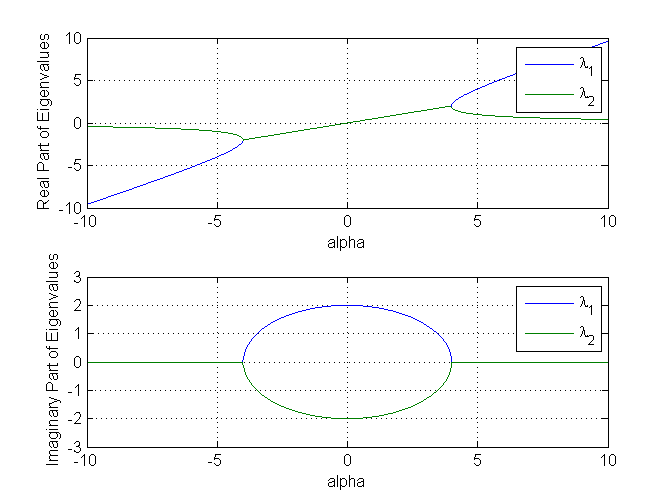

Lab 5 Prelab- Krishnateja Pemmaraju, Section 62, 7/27/2011
Contents
Problem Statement
In this prelab, we varied the variable alpha from -10 to 10 to determine the systems eigenvalues. Then plot the values against the real and imaginary eigen values. Then simulate a portrait phase using PPLANE.
Solution Code
x = -10:.01:10; b = zeros(2,numel(x)); for k = 1:numel(x) A = [x(k) 2; -2 0]; b(:,k) = eig(A); end subplot(2,1,1) plot(x,real(b)) legend('\lambda_1','\lambda_2') xlabel('alpha') ylabel('Real Part of Eigenvalues') grid on subplot(2,1,2) plot(x,imag(b)) axis([-10 10 -3 3]) legend('\lambda_1','\lambda_2') xlabel('alpha') ylabel('Imaginary Part of Eigenvalues') grid on
Conclusion
In conclusion, using the codes from the previous labs and the newly learned 'eig()' function, it was possible to get the graph properly.